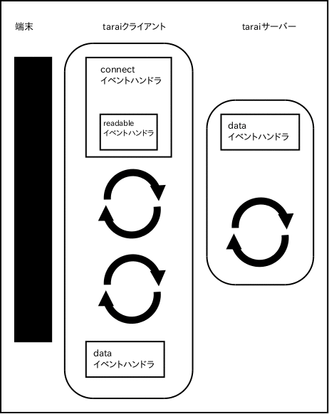

"use strict";-
chap07.spec.js
-
-
第7章 高階関数を活用する
-
小目次
var expect = require('expect.js'); -
テストで利用されるlistモジュールとstreamモジュールを定義しておく
-
listモジュール
var list = { match : (data, pattern) => { return data.call(list, pattern); }, empty: (_) => { return (pattern) => { return pattern.empty(); }; }, cons: (value, alist) => { return (pattern) => { return pattern.cons(value, alist); }; }, head: (alist) => { return list.match(alist, { empty: (_) => { return null; }, cons: (head, tail) => { return head; } }); }, tail: (alist) => { return list.match(alist, { empty: (_) => { return null; }, cons: (head, tail) => { return tail; } }); }, isEmpty: (alist) => { return list.match(alist, { empty: (_) => { return true; }, cons: (head, tail) => { return false; } }); }, /* append:: LIST[T] -> LIST[T] -> LIST[T] */ append: (xs) => { return (ys) => { return list.match(xs, { empty: (_) => { return ys; }, cons: (head, tail) => { return list.cons(head, list.append(tail)(ys)); } }); }; }, /* map:: LIST[T] -> FUNC[T -> T] -> LIST[T] */ map: (alist) => { return (transform) => { return list.match(alist,{ empty: (_) => { return list.empty(); }, cons: (head,tail) => { return list.cons(transform(head),list.map(tail)(transform)); } }); }; }, reverse: (alist) => { var reverseAux = (alist, accumulator) => { return list.match(alist, { empty: (_) => { return accumulator; // 空のリストの場合は終了 }, cons: (head, tail) => { return reverseAux(tail, list.cons(head, accumulator)); } }); }; return reverseAux(alist, list.empty()); }, toArray: (alist) => { var toArrayAux = (alist,accumulator) => { return list.match(alist, { empty: (_) => { return accumulator; // 空のリストの場合は終了 }, cons: (head, tail) => { return toArrayAux(tail, accumulator.concat(head)); } }); }; return toArrayAux(alist, []); }, fromArray: (array) => { expect(array).to.an('array'); return array.reduce((accumulator, item) => { return list.append(accumulator)(list.cons(item, list.empty())); }, list.empty()); } }; -
streamモジュール
var stream = { match: (data, pattern) => { return data.call(stream, pattern); }, empty: (_) => { return (pattern) => { expect(pattern).to.an('object'); return pattern.empty(); }; }, cons: (head,tailThunk) => { expect(tailThunk).to.a('function'); return (pattern) => { expect(pattern).to.an('object'); return pattern.cons(head,tailThunk); }; }, /* head:: STREAM -> MAYBE[STREAM] */ head: (lazyList) => { return stream.match(lazyList,{ empty: (_) => { return null; }, cons: (value, tailThunk) => { return value; } }); }, /* tail:: STREAM -> MAYBE[STREAM] */ tail: (lazyList) => { return stream.match(lazyList,{ empty: (_) => { return null; }, cons: (head, tailThunk) => { return tailThunk(); } }); }, isEmpty: (lazyList) => { return stream.match(lazyList,{ empty: (_) => { return true; }, cons: (head,tailThunk) => { return false; } }); }, /* take:: STREAM -> NUMBER -> STREAM */ take: (lazyList) => { return (number) => { expect(number).to.a('number'); expect(number).to.be.greaterThan(-1); return stream.match(lazyList,{ empty: (_) => { return stream.empty(); }, cons: (head,tailThunk) => { if(number === 0) { return stream.empty(); } else { return stream.cons(head,(_) => { return stream.take(tailThunk())(number -1); }); } } }); }; }, enumFrom: (from) => { return stream.cons(from, (_) => { return stream.enumFrom(from + 1); }); }, forAll: (astream) => { return (predicate) => { var forAllHelper = (astream) => { return stream.match(astream,{ empty: (_) => { return true; }, cons: (head,tailThunk) => { return predicate(head) && forAllHelper(tailThunk()); } }); }; return stream.match(astream,{ empty: (_) => { return false; // 空のストリームの場合は、必ず false が返る }, cons: (head,tailThunk) => { return forAllHelper(astream); } }); }; } }; // end of 'stream' module -
7.2
カリー化で関数を渡す describe('カリー化で関数を渡す', () => { -
it('multipleOf関数の定義', (next) => { /* #@range_begin(multipleOf_uncurried) */ var multipleOf = (n,m) => { if(m % n === 0) { /* m / n の余りが 0 かどうか */ return true; } else { return false; } }; /* #@range_end(multipleOf_uncurried) */ -
リスト7.2 multipleOf関数のテスト
/* #@range_begin(multipleOf_uncurried_test) */ expect( multipleOf(2,4) /* 4は、2の倍数である */ ).to.eql( true ); /* #@range_end(multipleOf_uncurried_test) */ expect( multipleOf(3,4) /* 4は、3の倍数ではない */ ).to.eql( false ); next(); }); -
リスト7.3 カリー化されたmultipleOf関数の定義
it('カリー化されたmultipleOf関数', (next) => { /* #@range_begin(multipleOf_curried) */ var multipleOf = (n) => { // 外側の関数定義 return (m) => { // 内側の関数定義 if(m % n === 0) { return true; } else { return false; } }; }; /* #@range_end(multipleOf_curried) */ -
リスト7.4 カリー化されたmultipleOf関数のテスト
/* #@range_begin(multipleOf_curried_test) */ expect( multipleOf(2)(4) /* 関数適用を2回実行する */ ).to.eql( true ); /* #@range_end(multipleOf_curried_test) */ expect( multipleOf(3)(4) /* 4は、3の倍数ではない */ ).to.eql( false ); -
リスト7.5 multipleOf関数のテスト
/* #@range_begin(multipleOf_curried_partilly_applied) */ var twoFold = multipleOf(2); expect( twoFold(4) /* 4は、2の倍数である */ ).to.eql( true ); /* #@range_end(multipleOf_curried_partilly_applied) */ next(); }); it('カリー化された指数関数', (next) => { -
/* #@range_begin(exponential_curried) */ var exponential = (base) => { return (index) => { if(index === 0){ return 1; } else { return base * exponential(base)(index - 1); } }; }; /****** テスト ******/ expect( exponential(2)(3) // 2の3乗を求める ).to.eql( 8 ); /* #@range_end(exponential_curried) */ expect( exponential(2)(2) ).to.eql( 4 ); -
/* #@range_begin(flip_definition) */ var flip = (fun) => { return (x) => { return (y) => { return fun(y)(x); // 適用する引数の順番を逆転させる }; }; }; /* #@range_end(flip_definition) */ -
リスト7.8 flip関数でexponential関数の引数の順番を変更する
/* #@range_begin(flipped_exponential) */ /* flipで引数を逆転させて、2乗を定義する */ var square = flip(exponential)(2); /* flipで引数を逆転させて、3乗を定義する */ var cube = flip(exponential)(3); /* #@range_end(flipped_exponential) */ /* #@range_begin(flipped_exponential_test) */ expect( square(2) ).to.eql( 4 /* 2 * 2 = 4 */ ); expect( cube(2) ).to.eql( 8 /* 2 * 2 * 2 = 8 */ ); /* #@range_end(flipped_exponential_test) */ next(); }); -
コラム： チャーチ数
describe('コラム： チャーチ数', () => { -
リスト7.9 チャーチによる自然数の定義
it('チャーチによる自然数の定義', (next) => { /* #@range_begin(church_numeral) */ var zero = (f) => { return (x) => { return x; // 関数を0回適用する }; }; var one = (f) => { return (x) => { return f(x); // 関数を1回適用する }; }; var two = (f) => { return (x) => { return f(f(x)); // 関数を2回適用する }; }; var three = (f) => { return (x) => { return f(f(f(x))); // 関数を3回適用する }; }; /*#@range_end(church_numeral) */ var add = (m) => { return (n) => { return (f) => { return (x) => { return m(f)(n(f)(x)); }; }; }; }; var succ = (n) => { return (f) => { return (x) => { return f(n(f)(x)); }; }; }; var counter = (init) => { var _init = init; return (_) => { _init = _init + 1; return _init; }; }; expect(one(counter(0))()).to.eql(1); expect(two(counter(0))()).to.eql(2); expect(three(counter(0))()).to.eql(3); expect(succ(one)(counter(0))()).to.eql(2); expect(succ(two)(counter(0))()).to.eql(3); expect(add(zero)(one)(counter(0))()).to.eql(1); expect(add(one)(one)(counter(0))()).to.eql(2); expect(add(one)(two)(counter(0))()).to.eql(3); expect(add(two)(three)(counter(0))()).to.eql(5); next(); }); }); }); -
7.3
コンビネータで関数を組み合わせる describe('コンビネータで関数を組み合わせる', () => { -
コンビネータの作り方 describe('コンビネータの作り方', () => { -
リスト7.10 multipleOf関数の再利用
it('multipleOf関数の再利用', (next) => { var multipleOf = (n) => { return (m) => { if(m % n === 0) { return true; } else { return false; } }; }; /* #@range_begin(multipleOf_combinator) */ var even = multipleOf(2); /* カリー化されたmultipleOf関数を使う */ expect( even(2) ).to.eql( true ); /* #@range_end(multipleOf_combinator) */ next(); }); describe('論理コンビネータ', () => { var multipleOf = (n) => { return (m) => { if(m % n === 0) { return true; } else { return false; } }; }; var even = multipleOf(2); -
リスト7.13 notコンビネータ
it('notコンビネータ', (next) => { /* #@range_begin(not_combinator) */ /* not:: FUN[NUM => BOOL] => FUN[NUM => BOOL] */ var not = (predicate) => { // predicateの型はFUN[NUM => BOOL] /* 全体として、FUN[NUM => BOOL]型を返す */ return (arg) => { // argの型はNUM return ! predicate(arg); // !演算子で論理を反転させて、BOOLを返す }; }; /* #@range_end(not_combinator) */ -
リスト7.15 notコンビネータによるodd関数の定義
/* #@range_begin(not_combinator_test) */ var odd = not(even); // notコンビネータでodd関数を定義する /******** テスト ********/ expect( odd(3) // 3は奇数である ).to.eql( true ); expect( odd(2) // 2は奇数でない ).to.eql( false ); /* #@range_end(not_combinator_test) */ next(); }); /* 本書では割愛したが、論理和や論理積を実行するコンビネータも同様に定義できる */ it('他の論理コンビネータ', (next) => { var not = (predicate) => { return (arg) => { return ! predicate(arg); }; }; /* 「もしくは」を表す論理和 */ /* or:: (NUMBER->BOOL, NUMBER->BOOL) -> (NUMBER->BOOL) */ var or = (f,g) => { return (arg) => { return f(arg) || g(arg); }; }; /* 「かつ」を表す論理積 */ /* and:: (NUMBER->BOOL, NUMBER->BOOL) -> (NUMBER->BOOL) */ var and = (f,g) => { return (arg) => { return f(arg) && g(arg); }; }; var positive = (n) => { return n > 0; }; var zero = (n) => { return n === 0; }; /* negativeは、0より小さな数値かどうかを判定する */ var negative = and(not(positive), not(zero)); expect(negative(-3)).to.eql(true); expect(negative(3)).to.eql(false); expect(negative(0)).to.eql(false); next(); }); }); }); -
describe('関数を合成する', () => { -
リスト7.16 関数合成の定義
/* #@range_begin(compose_definition) */ var compose = (f,g) => { return (arg) => { return f(g(arg)); }; }; /* #@range_end(compose_definition) */ -
リスト7.17 関数合成のテスト
/* #@range_begin(compose_test) */ var f = (x) => { return x * x + 1; }; var g = (x) => { return x - 2; }; expect( compose(f,g)(2) // f◦g で合成された関数 ).to.eql( f(g(2)) // 合成せずに順次実行した場合 ); /* #@range_end(compose_test) */ -
関数合成の条件
describe('関数合成の条件', () => { -
リスト7.18 反数関数の合成
it('反数関数の合成', (next) => { /* #@range_begin(composition_example_opposite_twice) */ /* 反数の定義 */ var opposite = (n) => { return - n; }; expect( /* 反数同士の合成は成功する */ compose(opposite,opposite)(2) ).to.eql( 2 // -(-2) === 2 ); /* #@range_end(composition_example_opposite_twice) */ next(); }); -
リスト7.20 カリー化による合成
it('カリー化による合成', (next) => { /* #@range_begin(compose_opposite_add_successful) */ var opposite = (x) => { return - x; }; var addCurried = (x) => { // カリー化されたadd関数 return (y) => { return x + y; }; }; expect( compose(opposite, addCurried(2))(3) ).to.eql( -5 ); /* #@range_end(compose_opposite_add_successful) */ next(); }); }); var flip = (fun) => { return (f) => { return (g) => { return fun(g)(f); }; }; }; -
関数合成による抽象化
describe('関数合成による抽象化', () => { -
リスト7.21 具体的なlast関数
it('具体的なlast関数', (next) => { /* #@range_begin(list_last_recursive) */ var last = (alist) => { return list.match(alist, { empty: (_) => { // alistが空の場合 return null; }, cons: (head, tail) => { // alistが空でない場合 return list.match(tail, { empty: (_) => { // alistの要素がただ1個の場合 return head; }, cons: (_, __) => { return last(tail); } }); } }); }; /* #@range_end(list_last_recursive) */ var aList = list.cons(1, list.cons(2, list.cons(3, list.empty()))); expect( last(aList) ).to.eql( 3 ); next(); }); -
リスト7.22 抽象的なlast関数
it('抽象的なlast関数', (next) => { /* #@range_begin(list_last_compose) */ var last = (alist) => { return compose(list.head, list.reverse)(alist); }; /* #@range_end(list_last_compose) */ var sequence = list.cons(1,list.cons(2,list.cons(3,list.cons(4,list.empty())))); expect( last(sequence) ).to.eql( 4 ); next(); }); -
表7.1 関数合成による様々な関数定義
関数名 関数合成による定義 length sum . map(alwaysOne) last head . reverse init reverse . tail . reverse all(predicate) and . map(predicate) any(predicate) or . map(predicate) none(predicate) and . map(not(predicate)) describe('関数合成による様々な関数定義', () => { var alwaysOne = (x) => { return 1; }; var alist = list.cons(1, list.cons(2, list.cons(3, list.empty()))); -
length関数の定義
it('length関数の定義', (next) => { var alwaysOne = (x) => { return 1; }; var sum = (alist) => { var sumHelper = (alist, accumulator) => { return list.match(alist,{ empty: (_) => { return accumulator; }, cons: (head, tail) => { return sumHelper(tail, accumulator + head); } }); }; return sumHelper(alist,0); }; var length = (alist) => { return compose(sum, flip(list.map)(alwaysOne))(alist); }; /****** テスト *******/ expect( length(alist) ).to.eql( 3 ); next(); }); -
last関数の定義
it('last関数の定義', (next) => { var last = (alist) => { return compose(list.head, list.reverse)(alist); }; expect( last(alist) ).to.eql( 3 ); next(); }); -
init関数の定義
it('init関数の義', (next) => { /* init = reverse . tail . reverse */ var init = (alist) => { return compose(list.reverse, compose(list.tail, list.reverse) )(alist); }; /****** テスト *******/ expect( list.toArray(init(alist)) ).to.eql( [1,2] ); next(); }); -
all関数の定義
it('all関数の定義', (next) => { var and = (alist) => { return list.match(alist, { empty: (_) => { return true; }, cons: (head, tail) => { return head && and(tail); } }); }; var all = (predicate) => { return (alist) => { return compose(and, flip(list.map)(predicate))(alist); }; }; expect( all((x) => { return x > 0; })(alist) ).to.eql( true ); next(); }); -
any関数の定義
it('any関数の定義', (next) => { var or = (alist) => { return list.match(alist, { empty: (_) => { return false; }, cons: (head, tail) => { return head || or(tail); } }); }; var any = (predicate) => { return (alist) => { return compose(or, flip(list.map)(predicate))(alist); }; }; expect( any((x) => { return x < 2; })(alist) ).to.eql( true ); expect( any((x) => { return x < 1; })(alist) ).to.eql( false ); next(); }); -
none関数の定義
it('none関数の定義', (next) => { var and = (alist) => { return list.match(alist, { empty: (_) => { return true; }, cons: (head, tail) => { return head && and(tail); } }); }; var not = (predicate) => { // predicate::FUN[NUM => BOOL] return (arg) => { // FUN[NUM => BOOL]型を返す return ! predicate(arg); // !演算子で論理を反転させる }; }; var none = (predicate) => { return (alist) => { return compose(and, flip(list.map)(not(predicate)))(alist); }; }; expect( none((x) => { return x < 0; })(alist) ).to.eql( true ); next(); }); }); }); -
it('Y combinator', (next) => { /* #@range_begin(Y_combinator) */ var Y = (F) => { return ((x) => { return F((y) => { return x(x)(y); }) ; })((x) => { return F((y) => { return x(x)(y); }) ; }); }; /* #@range_end(Y_combinator) */ -
リスト7.24 Yコンビネータによるfactorial関数の実装
/* #@range_begin(Y_combinator_test) */ var factorial = Y((fact) => { return (n) => { if (n === 0) { return 1; } else { return n * fact(n - 1); } }; }); expect( factorial(3) // 3 * 2 * 1 = 6 ).to.eql( 6 ); /* #@range_end(Y_combinator_test) */ next(); }); }); // 関数を合成する }); // コンビネータ -
describe('クロージャーを使う', () => { var compose = (f,g) => { return (arg) => { return f(g(arg)); }; }; -
クロージャーの仕組み describe('クロージャーの仕組み', () => { -
リスト7.25 環境における変数のバインディング
it('環境における変数のバインディング', (next) => { /* #@range_begin(variable_binding_in_environment) */ /* 変数fooに数値1をバインドする */ var foo = 1; /* 変数bar に文字列 "a string" をバインドする */ var bar = "a string"; /* #@range_end(variable_binding_in_environment) */ -
リスト7.26 環境からバインディングを参照する
/* #@range_begin(variable_binding_in_environment_test) */ /* 環境 <foo |-> 1, bar |-> "a string"> のもとで評価する */ expect( foo // 上記環境から変数fooの値を取り出す ).to.eql( 1 ); /* #@range_end(variable_binding_in_environment_test) */ next(); }); -
リスト7.27 部分適用と環境
it('部分適用と環境', (next) => { var multipleOf = (n) => { // 外側の関数定義 return (m) => { // 内側の関数定義 if(m % n === 0) { return true; } else { return false; } }; }; /* #@range_begin(partial_application_with_environment) */ var twoFold = multipleOf(2); expect( twoFold(4) ).to.eql( true ); /* #@range_end(partial_application_with_environment) */ next(); }); -
クロージャーで状態をカプセル化する describe('クロージャーで状態をカプセル化する', () => { -
リスト7.28 クロージャーとしてのcounter関数
it('クロージャーとしてのcounter関数', (next) => { /* #@range_begin(counter_as_closure) */ var counter = (init) => { var countingNumber = init; /* countingNumberの環境を持つクロージャーを返す */ return (_) => { countingNumber = countingNumber + 1; return countingNumber ; }; }; /* #@range_end(counter_as_closure) */ -
リスト7.29 counter関数の利用法
/* #@range_begin(counter_as_closure_test) */ var counterFromZero = counter(0); expect( counterFromZero() // 1回目の実行 ).to.eql( 1 ); expect( counterFromZero() // 2回目の実行 ).to.eql( 2 ); /* #@range_end(counter_as_closure_test) */ next(); }); -
クロージャーで不変なデータ型を作る
describe('クロージャーで不変なデータ型を作る', () => { -
リスト7.31 カリー化された不変なオブジェクト型
it('カリー化された不変なオブジェクト型', (next) => { /* #@range_begin(immutable_object_type_curried) */ var object = { // objectモジュール /* empty:: STRING => Any */ empty: (key) => { return null; }, /* set:: (STRING,Any) => (STRING => Any) => STRING => Any */ set: (key, value) => { return (obj) => { return (queryKey) => { if(key === queryKey) { return value; } else { return object.get(queryKey)(obj); } }; }; }, /* get:: (STRING) => (STRING => Any) => Any */ get: (key) => { return (obj) => { return obj(key); }; } }; /* #@range_end(immutable_object_type_curried) */ -
リスト7.32 カリー化された不変なオブジェクト型のテスト
/* #@range_begin(immutable_object_type_curried_test) */ var robots = compose( // object.setを合成する object.set("C3PO", "Star Wars"), // (STRING => Any) => STRING => Any object.set("HAL9000","2001: a space odessay") // (STRING => Any) => STRING => Any )(object.empty); /* )(object.empty()); これは適切でない */ expect( object.get("HAL9000")(robots) ).to.eql( "2001: a space odessay" ); expect( object.get("C3PO")(robots) ).to.eql( "Star Wars" ); -
該当するデータがなければ、nullが返る
expect( object.get("鉄腕アトム")(robots) ).to.eql( null ); /* #@range_end(immutable_object_type_curried_test) */ next(); }); }); -
クロージャーでジェネレーターを作る
describe('クロージャーでジェネレーターを作る', () => { -
リスト7.33 ストリームからジェネレータを作る
describe('ストリームからジェネレータを作る', () => { /* #@range_begin(generator_from_stream) */ var generate = (aStream) => { /* いったんローカル変数にストリームを格納する */ var _stream = aStream; /* ジェネレータ関数が返る */ return (_) => { return stream.match(_stream, { empty: () => { return null; }, cons: (head, tailThunk) => { _stream = tailThunk(); // ローカル変数を更新する return head; // ストリームの先頭要素を返す } }); }; }; /* #@range_end(generator_from_stream) */ -
リスト7.34 整数列のジェネレータ
it('整数列のジェネレータ',(next) => { var enumFrom = (from) => { return stream.cons(from, (_) => { return enumFrom(from + 1); }); }; /* #@range_begin(integer_generator) */ /* 無限の整数列を生成する */ var integers = enumFrom(0); /* 無限ストリームからジェネレータを生成する */ var intGenerator = generate(integers); expect(intGenerator()).to.eql( 0 ); expect(intGenerator()).to.eql( 1 ); expect(intGenerator()).to.eql( 2 ); /* #@range_end(integer_generator) */ next(); }); it('無限の素数列を作る',(next) => { this.timeout(4000); var not = (predicate) => { return (arg) => { return ! predicate(arg); }; }; var stream = { match: (data, pattern) => { return data.call(stream, pattern); }, empty: (_) => { return (pattern) => { expect(pattern).to.an('object'); return pattern.empty(); }; }, cons: (head,tailThunk) => { expect(tailThunk).to.a('function'); return (pattern) => { expect(pattern).to.an('object'); return pattern.cons(head,tailThunk); }; }, head: (lazyList) => { return stream.match(lazyList,{ empty: (_) => { return null; }, cons: (value, tailThunk) => { return value; } }); }, tail: (lazyList) => { return stream.match(lazyList,{ empty: (_) => { return null; }, cons: (head, tailThunk) => { return tailThunk(); } }); }, toArray: (lazyList) => { return stream.match(lazyList,{ empty: (_) => { return []; }, cons: (head,tailThunk) => { return stream.match(tailThunk(),{ empty: (_) => { return [head]; }, cons: (head_,tailThunk_) => { return [head].concat(stream.toArray(tailThunk())); } }); } }); }, take: (lazyList) => { return (number) => { expect(number).to.a('number'); expect(number).to.be.greaterThan(-1); return stream.match(lazyList,{ empty: (_) => { return stream.empty(); }, cons: (head,tailThunk) => { if(number === 0) { return stream.empty(); } else { return stream.cons(head,(_) => { return stream.take(tailThunk())(number -1); }); } } }); }; }, -
リスト7.35 ストリームのfilter関数
/* #@range_begin(stream_filter) */ /* filter:: FUN[T => BOOL] => STREAM[T] => STREAM[T] */ filter: (predicate) => { return (aStream) => { return stream.match(aStream,{ empty: (_) => { return stream.empty(); }, cons: (head,tailThunk) => { if(predicate(head)){ // 条件に合致する場合 return stream.cons(head,(_) => { return stream.filter(predicate)(tailThunk()); }); } else { // 条件に合致しない場合 return stream.filter(predicate)(tailThunk()); } } }); }; }, /* #@range_end(stream_filter) */ -
リスト7.36 ストリームのremove関数
/* #@range_begin(stream_remove) */ /* remove:: FUN[T => BOOL] => STREAM[T] => STREAM[T] */ remove: (predicate) => { return (aStream) => { return stream.filter(not(predicate))(aStream); }; }, /* #@range_end(stream_remove) */ enumFrom: (from) => { return stream.cons(from, (_) => { return stream.enumFrom(from + 1); }); }, /* #@range_begin(stream_generate) */ generate: (astream) => { var theStream = astream; return (_) => { return stream.match(theStream,{ empty: (_) => { return null; }, cons: (head,tailThunk) => { theStream = tailThunk(); return head; } }); }; } /* #@range_end(stream_generate) */ }; // end of 'stream' module var multipleOf = (n) => { return (m) => { if(n % m === 0) { return true; } else { return false; } }; }; -
リスト7.37 素数列の生成

/* #@range_begin(eratosthenes_sieve) */ /* エラトステネスのふるい */ var sieve = (aStream) => { return stream.match(aStream, { empty: () => { return null; }, cons: (head, tailThunk) => { return stream.cons(head, (_) => { return sieve(stream.remove( // 後尾を素数の倍数でふるいにかける (item) => { return multipleOf(item)(head); } )(tailThunk())); }); } }); }; var primes = sieve(stream.enumFrom(2)); // 無限の素数列 /* #@range_end(eratosthenes_sieve) */ /* #@range_begin(eratosthenes_sieve_test) */ expect( stream.toArray(stream.take(primes)(10)) ).to.eql( [ 2, 3, 5, 7, 11, 13, 17, 19, 23, 29 ] ); /* #@range_end(eratosthenes_sieve_test) */ -
リスト7.39 素数のジェネレータ
/* #@range_begin(prime_generator) */ var primes = sieve(stream.enumFrom(2)); // 無限の素数列 var primeGenerator = generate(primes); // 素数のジェネレータ /******* テスト ********/ expect(primeGenerator()).to.eql( 2 ); expect(primeGenerator()).to.eql( 3 ); expect(primeGenerator()).to.eql( 5 ); /* #@range_end(prime_generator) */ next(); }); }); -
コラム：ECMAScript2015（ES6）におけるジェネレータ
参考資料: https://developer.mozilla.org/ja/docs/Web/JavaScript/Reference/Global_Objects/Generator
it('ECMAScript2015（ES6）におけるジェネレータ', (next) => { -
リスト7.40 ECMAScript2015のジェネレータ
/* #@range_begin(es6_generator) */ function* genCounter(){ yield 1; yield 2; return 3; }; var counter = genCounter(); expect( counter.next().value ).to.eql( 1 ); expect( counter.next().value ).to.eql( 2 ); /* #@range_end(es6_generator) */ next(); }); }); }); // クロージャーで状態をカプセル化する }); -
クロージャーの純粋性 describe('クロージャーの純粋性', () => { -
リスト 7.41 multipleOf関数の参照透過性
it('multipleOf関数の参照透過性', (next) => { var multipleOf = (n) => { return (m) => { if(m % n === 0) { return true; } else { return false; } }; }; /* #@range_begin(multipleOf_is_transparent) */ expect( multipleOf(2)(4) ).to.eql( multipleOf(2)(4) ); expect( multipleOf(3)(5) ).to.eql( multipleOf(3)(5) ); /* #@range_end(multipleOf_is_transparent) */ next(); }); -
リスト7.42 参照透過性のないクロージャーの例
it('参照透過性のないクロージャーの例', (next) => { var counter = (init) => { var _init = init; return (_) => { _init = _init + 1; return _init; }; }; /* #@range_begin(counter_is_not_transparent) */ var counterFromZero = counter(0); expect( counterFromZero() ).not.to.eql( // notで一致しないことをテストしている counterFromZero() ); /* #@range_end(counter_is_not_transparent) */ next(); }); -
リスト7.44 カウンターをクロージャーで定義する
it('カウンターをクロージャーで定義する', (next) => { /* チャーチ数 church numeral */ var zero = (f) => { return (x) => { return x; }; }; -
リスト7.45 チャーチ数のone関数
/* #@range_begin(church_one) */ var one = (f) => { return (x) => { return f(x); // f関数を1回適用する }; }; /* #@range_end(church_one) */ var two = (f) => { return (x) => { return f(f(x)); }; }; var three = (f) => { return (x) => { return f(f(f(x))); }; }; var succ = (n) => { return (f) => { return (x) => { return f(n(f)(x)); }; }; }; var add = (m) => { return (n) => { return (f) => { return (x) =>{ return m(f)(n(f)(x)); }; }; }; }; /* 関数適用の回数を数えるcounterクロージャー */ var counter = (init) => { var _init = init; // 可変な変数 return (_) => { _init = _init + 1; // 代入で変数_initを更新する return _init; }; }; /***** counterクロージャーを用いたチャーチ数のテスト *****/ /* #@range_begin(church_numeral_counter) */ expect( one(counter(0))() // oneはチャーチ数（@<list>{church_numeral}）の1 ).to.eql( 1 ); expect( two(counter(0))() // twoはチャーチ数（@<list>{church_numeral}）の2 ).to.eql( 2 ); /* #@range_end(church_numeral_counter) */ expect( add(one)(two)(counter(0))() ).to.eql( 3 ); next(); }); }); }); -
7.5
関数を渡す describe('関数を渡す', () => { var compose = (f,g) => { return (arg) => { return f(g(arg)); }; }; -
コールバックで処理をモジュール化する describe('コールバックで処理をモジュール化する', () => { -
リスト7.47 直接的な呼び出しの例
it('直接的な呼び出しの例', (next) => { /* #@range_begin(direct_call) */ var succ = (n) => { return n + 1; }; var doCall = (arg) => { return succ(arg); // succ関数を直接呼び出す }; expect( doCall(2) ).to.eql( 3 ); /* #@range_end(direct_call) */ next(); }); -
リスト7.48 単純なコールバックの例
it('単純なコールバックの例', (next) => { var succ = (n) => { return n + 1; }; /* #@range_begin(call_callback) */ var setupCallback = (callback) => { /* コールバック関数を実行する無名関数を返す */ return (arg) => { return callback(arg); }; }; /* コールバック関数を設定する */ var doCallback = setupCallback(succ); expect( doCallback(2) // 設定されたコールバック関数を実行する ).to.eql( 3 ); /* #@range_end(call_callback) */ next(); }); it('リストのmap関数', (next) => { -
リスト7.49 リストのmap関数の定義
/* #@range_begin(list_map) */ /* map:: FUN[T => T] => LIST[T] => LIST[T] */ var map = (callback) => { return (alist) => { return list.match(alist,{ empty: (_) => { return list.empty(); }, cons: (head, tail) => { /* コールバック関数を実行する */ return list.cons(callback(head), map(callback)(tail)); // 再帰呼び出し } }); }; }; /* #@range_end(list_map) */ -
リスト7.50 map関数のテスト
/* #@range_begin(list_map_test) */ /* map処理の対象となる数値のリスト */ var numbers = list.cons(1, list.cons(2, list.cons(3, list.empty()))); /* 要素を2倍するmap処理 */ var mapDouble = map((n) => { return n * 2; }); expect( compose(list.toArray,mapDouble)(numbers) ).to.eql( [2,4,6] ); /* 要素を2乗するmap処理 */ var mapSquare = map((n) => { return n * n; }); expect( compose(list.toArray,mapSquare)(numbers) ).to.eql( [1,4,9] ); /* #@range_end(list_map_test) */ next(); }); }); -
畳み込み関数に関数を渡す describe('畳み込み関数に関数を渡す', () => { describe('コールバックによるリストの再帰関数', () => { -
リスト7.51 sum関数の定義
it('sum関数の定義', (next) => { var list = { match : (data, pattern) => { return data.call(list, pattern); }, empty: (_) => { return (pattern) => { return pattern.empty(); }; }, cons: (value, alist) => { return (pattern) => { return pattern.cons(value, alist); }; }, /* #@range_begin(list_sum) */ sum: (alist) => { return (accumulator) => { return list.match(alist,{ empty: (_) => { return accumulator; }, cons: (head, tail) => { return list.sum(tail)(accumulator + head); } }); }; }, /* #@range_end(list_sum) */ -
リスト7.52 コールバック関数を用いたsum関数の再定義
/* #@range_begin(list_sum_callback) */ sumWithCallback: (alist) => { return (accumulator) => { return (CALLBACK) => { // コールバック関数を受け取る return list.match(alist,{ empty: (_) => { return accumulator; }, cons: (head, tail) => { return CALLBACK(head)( // コールバック関数を呼び出す list.sumWithCallback(tail)(accumulator)(CALLBACK) ); } }); }; }; } /* #@range_end(list_sum_callback) */ }; -
リスト7.53 sumWithCallback関数のテスト
/* #@range_begin(list_sum_callback_test) */ var numbers = list.cons(1, list.cons(2, list.cons(3, list.empty()))); /* sumWithCallback関数に渡すコールバック関数 */ var callback = (n) => { return (m) => { return n + m; }; }; expect( list.sumWithCallback(numbers)(0)(callback) ).to.eql( 6 // 1 + 2 + 3 = 6 ); /* #@range_end(list_sum_callback_test) */ expect( list.sum(numbers)(0) ).to.eql( 6 ); next(); }); -
リスト7.54 length関数の定義
it('length関数の定義', (next) => { var list = { match : (data, pattern) => { return data.call(list, pattern); }, empty: (_) => { return (pattern) => { return pattern.empty(); }; }, cons: (value, alist) => { return (pattern) => { return pattern.cons(value, alist); }; }, /* #@range_begin(list_length) */ length: (alist) => { return (accumulator) => { return list.match(alist,{ empty: (_) => { return accumulator; }, cons: (head, tail) => { return list.length(tail)(accumulator + 1); } }); }; }, /* #@range_end(list_length) */ -
リスト7.55 length関数の再定義
/* #@range_begin(list_length_callback) */ lengthWithCallback: (alist) => { return (accumulator) => { return (CALLBACK) => { // コールバック関数を受け取る return list.match(alist,{ empty: (_) => { return accumulator; }, cons: (head, tail) => { return CALLBACK(head)( list.lengthWithCallback(tail)(accumulator)(CALLBACK) ); } }); }; }; } /* #@range_end(list_length_callback) */ }; var numbers = list.cons(1, list.cons(2, list.cons(3, list.empty()))); expect( list.length(numbers)(0) ).to.eql( 3 ); -
リスト7.56 lengthWithCallback関数でリストの長さをテストする
/* #@range_begin(list_length_callback_test) */ /* lengthWithCallback関数に渡すコールバック関数 */ var callback = (n) => { return (m) => { return 1 + m; }; }; expect( list.lengthWithCallback(numbers)(0)(callback) ).to.eql( 3 ); /* #@range_end(list_length_callback_test) */ next(); }); }); describe('畳み込み関数', () => { -
リスト7.58 リストの畳み込み関数
/* #@range_begin(list_foldr) */ var foldr = (alist) => { return (accumulator) => { return (callback) => { return list.match(alist,{ empty: (_) => { return accumulator; }, cons: (head, tail) => { return callback(head)(foldr(tail)(accumulator)(callback)); } }); }; }; }; /* #@range_end(list_foldr) */ -
リスト7.59 foldr関数によるsum関数とlength関数の定義
/* foldr関数によるsum関数 */ it("foldr関数によるsum関数", (next) => { /* #@range_begin(foldr_sum) */ var sum = (alist) => { return foldr(alist)(0)((item) => { return (accumulator) => { return accumulator + item; }; }); }; /* #@range_end(foldr_sum) */ /* list = [1,2,3,4] */ var seq = list.cons(1,list.cons(2,list.cons(3,list.cons(4,list.empty())))); expect( sum(seq) ).to.eql( 10 // 1 + 2 + 3 + 4 = 10 ); next(); }); /* foldr関数によるlength関数 */ it("foldrでlength関数を作る", (next) => { /* #@range_begin(foldr_length) */ var length = (alist) => { return foldr(alist)(0)((item) => { return (accumulator) => { return accumulator + 1; }; }); }; /* #@range_end(foldr_length) */ /* list = [1,2,3,4] */ var seq = list.cons(1,list.cons(2,list.cons(3,list.cons(4,list.empty())))); expect( length(seq) ).to.eql( 4 ); next(); }); -
表7.2 反復処理における蓄積変数の初期値とコールバック関数の関係
関数名 蓄積変数の初期値 関数合成による定義 sum 0 (n) => { return (m) => { return n + m;};} length 0 (n) => { return (m) => { return 1 + m;};} product 1 (n) => { return (m) => { return n ＊ m;};} all true (n) => { return (m) => { return n ＆＆ m;};} any true (n) => { return (m) => { return n ｜｜ m;};} describe('反復処理における蓄積変数の初期値とコールバック関数の関係', () => { it("foldrでproductを作る", (next) => { /* #@range_begin(foldr_product) */ var product = (alist) => { return foldr(alist)(1)((item) => { return (accumulator) => { return accumulator * item; }; }); }; /********* テスト **********/ /* list = [1,2,3] */ var seq = list.cons(1, list.cons(2, list.cons(3, list.empty()))); expect( product(seq) ).to.eql( 6 // 1 * 2 * 3 = 6 ); /* #@range_end(foldr_product) */ next(); }); it("foldrでallを作る", (next) => { var all = (alist) => { return foldr(alist)(true)((item) => { return (accumulator) => { return accumulator && item; }; }); }; /********* テスト **********/ var allTrueList = list.cons(true, list.cons(true, list.cons(true, list.empty()))); expect( all(allTrueList) ).to.eql( true ); var someFalseList = list.cons(true, list.cons(false, list.cons(true, list.empty()))); expect( all(someFalseList) ).to.eql( false ); next(); }); it("foldrでanyを作る", (next) => { var any = (alist) => { return foldr(alist)(false)((item) => { return (accumulator) => { return accumulator || item; }; }); }; /********* テスト **********/ var allTrueList = list.cons(true, list.cons(true, list.cons(true, list.empty()))); expect( any(allTrueList) ).to.eql( true ); var someFalseList = list.cons(true, list.cons(false, list.cons(true, list.empty()))); expect( any(someFalseList) ).to.eql( true ); next(); }); }); -
リス7.60 foldr関数によるreverse関数の定義
it("foldr関数によるreverse関数の定義", (next) => { var list = { match : (data, pattern) => { return data.call(list, pattern); }, empty: (_) => { return (pattern) => { return pattern.empty(); }; }, cons: (value, alist) => { return (pattern) => { return pattern.cons(value, alist); }; }, toArray: (alist) => { var toArrayAux = (alist,accumulator) => { return list.match(alist, { empty: (_) => { return accumulator; }, cons: (head, tail) => { return toArrayAux(tail, accumulator.concat(head)); } }); }; return toArrayAux(alist, []); }, /* #@range_begin(foldr_reverse) */ /* listのappend関数は、2つのリストを連結する */ append: (xs) => { return (ys) => { return list.match(xs, { empty: (_) => { return ys; }, cons: (head, tail) => { return list.cons(head, list.append(tail)(ys)); } }); }; }, /* list.reverse関数は、リストを逆転する */ reverse: (alist) => { return foldr(alist)(list.empty(0))((item) => { return (accumulator) => { return list.append(accumulator)(list.cons(item, list.empty())); }; }); } /* #@range_end(foldr_reverse) */ }; /* list = [1,2,3,4] */ var seq = list.cons(1, list.cons(2, list.cons(3, list.cons(4, list.empty())))); expect( list.toArray(list.reverse(seq)) ).to.eql( [ 4, 3, 2, 1] ); next(); }); -
リスト7.61 foldr関数によるfind関数の定義
it("foldr関数によるfind関数の定義", (next) => { var even = (n) => { return (n % 2) === 0; }; var list = { empty: (_) => { return (pattern) => { return pattern.empty(); }; }, cons: (value, alist) => { return (pattern) => { return pattern.cons(value, alist); }; }, /* #@range_begin(foldr_find) */ /* list.find関数は、条件に合致した要素をリストから探す */ find: (alist) => { return (predicate) => { // 要素を判定する述語関数 return foldr(alist)(null)((item) => { // foldrを利用する return (accumulator) => { /* 要素が見つかった場合、その要素を返す */ if(predicate(item) === true) { return item; } else { return accumulator; }; }; }); }; } /* #@range_end(foldr_find) */ }; /******** テスト *********/ var numbers = list.cons(1, list.cons(2, list.cons(3, list.empty()))); expect( list.find(numbers)(even) // 最初に登場する偶数の要素を探す ).to.eql( 2 ); next(); }); it("foldrで map関数を作る", (next) => { var double = (number) => { return number * 2; }; /* #@range_begin(foldr_map) */ var map = (alist) => { return (callback) => { // 個々の要素を変換するコールバック関数 return foldr(alist)(list.empty())((item) => { return (accumulator) => { return list.cons(callback(item), accumulator); }; }); }; }; /****** テスト ******/ /* list = [1,2,3] */ var seq = list.cons(1, list.cons(2, list.cons(3, list.empty()))); expect( list.toArray(map(seq)(double)) ).to.eql( [ 2, 4, 6] // 2 * [1,2,3] = [2,4,6] ); /* #@range_end(foldr_map) */ next(); }); }); -
コラム：配列の畳み込み関数
参考資料: https://developer.mozilla.org/ja/docs/Web/JavaScript/Reference/Global_Objects/Array/reduce
describe("コラム：配列の畳み込み関数", () => { -
リスト7.62 reduceメソッドによるfromArray関数
it("reduceメソッドによるfromArray関数", (next) => { /* #@range_begin(list_fromArray) */ var fromArray = (array) => { return array.reduce((accumulator, item) => { return list.append(accumulator)(list.cons(item, list.empty())); }, list.empty()); }; /******* テスト *******/ var theList = fromArray([0,1,2,3]); expect( list.toArray(theList) ).to.eql( [0,1,2,3] ); /* #@range_end(list_fromArray) */ next(); }); }); }); -
非同期処理にコールバック関数を渡す describe('非同期処理にコールバック関数を渡す', () => { -
リスト7.64 tarai関数の定義
it("tarai関数の定義", (next) => { /* #@range_begin(tarai_function) */ /* たらいまわし関数 */ var tarai = (x,y,z) => { if(x > y) { return tarai(tarai(x - 1, y, z), tarai(y - 1, z, x), tarai(z - 1, x, y)); } else { return y; } }; expect( tarai(1 * 2, 1, 0) ).to.eql( 2 ); /* #@range_end(tarai_function) */ next(); }); -
taraiサーバークライアント 
});
-
describe('継続で未来を渡す', () => { -
継続とは何か
describe('継続とは何か', () => { -
リスト7.67 継続渡しのsucc関数
it("継続渡しのsucc関数", (next) => { /* #@range_begin(succ_cps) */ /* continues関数は、succ(n)のあとに続く継続 */ var succ = (n, continues) => { return continues(n + 1); }; /* #@range_end(succ_cps) */ -
リスト7.68 継続渡しのsucc関数をテストする
var identity = (any) => { return any; }; /* #@range_begin(succ_cps_test) */ /* identity関数を継続として渡すことで、 succ(1)の結果がそのまま返る */ expect( succ(1, identity) ).to.eql( 2 ); /* #@range_end(succ_cps_test) */ next(); }); -
リスト7.70 add(2, succ(3))の継続渡し
it("add(2, succ(3))の継続渡し", (next) => { var identity = (any) => { // 値をそのまま返すだけの継続 return any; }; /* #@range_begin(continuation_in_arithmetic) */ /* 継続渡しのsucc関数 */ var succ = (n, continues) => { return continues(n + 1); }; /* 継続渡しのadd関数 */ var add = (n,m, continues) => { return continues(n + m); }; /* 継続渡しのsucc関数とadd関数を使って add(2, succ(3)) を計算する */ expect( succ(3, (succResult) => { return add(2, succResult, identity); }) ).to.eql( 6 ); /* #@range_end(continuation_in_arithmetic) */ next(); }); }); describe("継続で未来を選ぶ", () => { -
リスト7.71 継続による反復処理からの脱出
it("継続による反復処理からの脱出", (next) => { /* #@range_begin(stream_find_cps) */ var find = (aStream, predicate, continuesOnFailure, continuesOnSuccess) => { return list.match(aStream, { /* リストの最末尾に到着した場合 成功継続で反復処理を抜ける */ empty: () => { return continuesOnSuccess(null); }, cons: (head, tailThunk) => { /* 目的の要素を見つけた場合 成功継続で反復処理を脱出する */ if(predicate(head) === true) { return continuesOnSuccess(head); } else { /* 目的の要素を見つけられなった場合、 失敗継続で次の反復処理を続ける */ return continuesOnFailure(tailThunk(), predicate, continuesOnFailure, continuesOnSuccess); }; } }); }; /* #@range_end(stream_find_cps) */ -
find関数に渡す2つの継続
var identity = (any) => { return any; }; -
リスト7.72 find関数に渡す2つの継続
/* #@range_begin(stream_find_continuations) */ /* 成功継続では、反復処理を脱出する */ var continuesOnSuccess = identity; /* 失敗継続では、反復処理を続ける */ var continuesOnFailure = (aStream, predicate, continuesOnRecursion, escapesFromRecursion) => { /* find関数を再帰的に呼び出す */ return find( aStream, predicate, continuesOnRecursion, escapesFromRecursion ); }; /* #@range_end(stream_find_continuations) */ -
リスト7.73 find関数のテスト
/* upto3変数は、1から3までの有限ストリーム */ var upto3 = stream.cons(1,(_) => { return stream.cons(2, (_) => { return stream.cons(3, (_) => { return stream.empty(); }); }); }); expect( find(upto3, (item) => { return (item === 4); // 4を探します }, continuesOnFailure, continuesOnSuccess) ).to.eql( null // リスト中に4の要素はないので、nullになります ); /* #@range_begin(stream_find_cps_test) */ /* 変数integersは、無限の整数ストリーム */ var integers = stream.enumFrom(0); /* 無限の整数列のなかから100を探す */ expect( find(integers, (item) => { return (item === 100); }, continuesOnFailure, continuesOnSuccess) ).to.eql( 100 // 100を見つけて返ってくる ); /* #@range_end(stream_find_cps_test) */ next(); }); }); -
describe("決定計算機", () => { -
式の代数的データ構造
var exp = { match : (anExp, pattern) => { // 代数的データ構造のパターンマッチ return anExp.call(exp, pattern); }, num: (n) => { // 数値の式 return (pattern) => { return pattern.num(n); }; }, add: (exp1, exp2) => { // 足し算の式 return (pattern) => { return pattern.add(exp1, exp2); }; } }; -
式の評価関数
var calculate = (anExp) => { return match(anExp, { num: (n) => { // 数値を評価する return n; }, add: (exp1, exp2) => { // 足し算の式を評価する return calculate(exp1) + calculate(exp2); } }); }; }); describe("非決定計算機を作る", () => { var exp = { match : (anExp, pattern) => { return anExp.call(exp, pattern); }, -
リスト7.75 非決定計算機の式
/* #@range_begin(amb_expression) */ amb : (alist) => { return (pattern) => { return pattern.amb(alist); }; }, /* #@range_end(amb_expression) */ num : (n) => { return (pattern) => { return pattern.num(n); }; }, add : (exp1, exp2) => { return (pattern) => { return pattern.add(exp1, exp2); }; } }; /* #@range_begin(amb_calculate) */ -
非決定性計算機の評価関数 var calculate = (anExp, continuesOnSuccess, continuesOnFailure) => { /* 式に対してパターンマッチを実行する */ return exp.match(anExp, { -
リスト7.79 数値の評価
/* #@range_begin(amb_calculate_num) */ /* 数値を評価する */ num: (n) => { return continuesOnSuccess(n, continuesOnFailure); }, /* #@range_end(amb_calculate_num) */ -
リスト7.80 足し算の評価
/* #@range_begin(amb_calculate_add) */ /* 足し算の式を評価する */ add: (x, y) => { /* まず引数xを評価する */ return calculate(x, (resultX, continuesOnFailureX) => { /* 次に引数yを評価する */ return calculate(y, (resultY, continuesOnFailureY) => { /* 引数xとyがともに成功すれば、両者の値で足し算を計算する */ return continuesOnSuccess(resultX + resultY, continuesOnFailureY); }, continuesOnFailureX); /* y の計算に失敗すれば、xの失敗継続を渡す */ }, continuesOnFailure); /* x の計算に失敗すれば、おおもとの失敗継続を渡す */ }, /* #@range_end(amb_calculate_add) */ -
リスト7.81 amb式の評価
/* #@range_begin(amb_calculate_amb) */ /* amb式を評価する */ amb: (choices) => { var calculateAmb = (choices) => { return list.match(choices, { /* amb(list.empty()) の場合、 すなわち選択肢がなければ、失敗継続を実行する */ empty: () => { return continuesOnFailure(); }, /* amb(list.cons(head, tail))の場合、 先頭要素を計算して、後尾は失敗継続に渡す */ cons: (head, tail) => { return calculate(head, continuesOnSuccess, (_) => { /* 失敗継続で後尾を計算する */ return calculateAmb(tail); }); } }); }; return calculateAmb(choices); } /* #@range_end(amb_calculate_amb) */ }); }; /* #@range_end(amb_calculate) */ -
リスト7.82 非決定計算機の駆動関数
/* #@range_begin(amb_driver) */ var driver = (expression) =>{ /* 中断された計算を継続として保存する変数 */ var suspendedComputation = null; /* 成功継続 */ var continuesOnSuccess = (anyValue, continuesOnFailure) => { /* 再開に備えて、失敗継続を保存しておく */ suspendedComputation = continuesOnFailure; return anyValue; }; /* 失敗継続 */ var continuesOnFailure = () => { return null; }; /* 内部に可変な状態suspendedComputationを持つクロージャーを返す */ return () => { /* 中断された継続がなければ、最初から計算する */ if(suspendedComputation === null) { return calculate(expression, continuesOnSuccess, continuesOnFailure); } else { /* 中断された継続があれば、その継続を実行する */ return suspendedComputation(); } }; }; /* #@range_end(amb_driver) */ it("amb[1,2] + 3 = amb[4, 5]", (next) => { var ambExp = exp.add(exp.amb(list.cons(exp.num(1),list.cons(exp.num(2), list.empty()))), exp.num(3)); var calculator = driver(ambExp); expect( calculator() ).to.eql( 4 // 1 + 3 = 4 ); expect( calculator() ).to.eql( 5 // 2 + 3 = 5 ); expect( calculator() ).to.eql( null ); next(); }); -
リスト7.83 非決定計算機のテスト
it("非決定計算機のテスト", (next) => { /* amb[1,2] + amb[3,4] = amb[4, 5, 5, 6] */ /* #@range_begin(amb_test) */ /* amb[1,2] + amb[3,4] = 4, 5, 5, 6 */ var ambExp = exp.add( exp.amb(list.fromArray([exp.num(1),exp.num(2)])), exp.amb(list.fromArray([exp.num(3),exp.num(4)]))); var calculator = driver(ambExp); expect( calculator() ).to.eql( 4 // 1 + 3 = 4 ); expect( calculator() ).to.eql( 5 // 2 + 3 = 5 ); expect( calculator() ).to.eql( 5 // 1 + 4 = 5 ); expect( calculator() ).to.eql( 6 // 2 + 4 = 6 ); expect( calculator() ).to.eql( null // これ以上の候補はないので、計算は終了 ); /* #@range_end(amb_test) */ next(); }); it("amb[1,2,3] + amb[10,20] = amb[11,21,12,22,13,23]", (next) => { var ambExp = exp.add( exp.amb(list.fromArray([exp.num(1),exp.num(2),exp.num(3)])), exp.amb(list.fromArray([exp.num(10),exp.num(20)]))); var calculator = driver(ambExp); expect( calculator() ).to.eql( 11 // 1 + 10 = 11 ); expect( calculator() ).to.eql( 21 // 1 + 20 = 21 ); expect( calculator() ).to.eql( 12 // 2 + 10 = 12 ); expect( calculator() ).to.eql( 22 // 2 + 20 = 22 ); expect( calculator() ).to.eql( 13 // 3 + 10 = 13 ); expect( calculator() ).to.eql( 23 // 3 + 20 = 23 ); expect( calculator() ).to.eql( null // これ以上の候補はないので、計算は終了 ); next(); }); it("amb[1,2] + amb[10,20,30] = amb[11,21,31,12,22,32]", (next) => { var ambExp = exp.add( exp.amb(list.fromArray([exp.num(1),exp.num(2)])), exp.amb(list.fromArray([exp.num(10),exp.num(20),exp.num(30)]))); var calculator = driver(ambExp); expect( calculator() ).to.eql( 11 // 1 + 10 = 11 ); expect( calculator() ).to.eql( 21 // 1 + 20 = 21 ); expect( calculator() ).to.eql( 31 // 1 + 30 = 31 ); expect( calculator() ).to.eql( 12 // 2 + 10 = 12 ); expect( calculator() ).to.eql( 22 // 2 + 20 = 22 ); expect( calculator() ).to.eql( 32 // 2 + 30 = 32 ); expect( calculator() ).to.eql( null // これ以上の候補はないので、計算は終了 ); next(); }); }); }); // 継続を渡す }); // 関数を渡す -
7.6
モナドを作る describe('モナドを作る', () => { var compose = (f,g) => { return (arg) => { return f(g(arg)); }; }; -
恒等モナド describe('恒等モナド', () => { -
リスト7.85 恒等モナドの定義
var ID = { /* #@range_begin(identity_monad) */ /* unit:: T => ID[T] */ unit: (value) => { // 単なる identity関数と同じ return value; }, /* flatMap:: ID[T] => FUN[T => ID[T]] => ID[T] */ flatMap: (instanceM) => { return (transform) => { return transform(instanceM); // 単なる関数適用と同じ }; }, /* #@range_end(identity_monad) */ compose: (f, g) => { return (x) => { return ID.flatMap(f(x))(g); }; } }; -
リスト7.86 恒等モナドunit関数のテスト
it("恒等モナドunit関数のテスト", (next) => { /* #@range_begin(identity_monad_unit_test) */ expect( ID.unit(1) ).to.eql( 1 ); /* #@range_end(identity_monad_unit_test) */ next(); }); -
リスト7.87 恒等モナドflatMap関数のテスト
it("恒等モナドflatMap関数のテスト", (next) => { var succ = (n) => { return n + 1; }; /* #@range_begin(identity_monad_flatMap_test) */ expect( ID.flatMap(ID.unit(1))((one) => { return ID.unit(succ(one)); }) ).to.eql( succ(1) ); /* #@range_end(identity_monad_flatMap_test) */ var double = (m) => { return m * 2; }; -
リスト7.88 flatMapと関数合成の類似性
/* #@range_begin(flatMap_and_composition) */ expect( ID.flatMap(ID.unit(1))((one) => { /* succ関数を適用する */ return ID.flatMap(ID.unit(succ(one)))((two) => { /* double関数を適用する */ return ID.unit(double(two)); }); }) ).to.eql( compose(double,succ)(1) ); /* #@range_end(flatMap_and_composition) */ next(); }); -
リスト7.89 恒等モナドのモナド則
describe("恒等モナドのモナド則", () => { /* #@range_begin(identity_monad_laws) */ it("flatMap(instanceM)(unit) === instanceM", (next) => { /* flatMap(instanceM)(unit) === instanceM の一例 */ var instanceM = ID.unit(1); -
右単位元則
/* #@range_begin(identity_monad_laws_right_unit_law) */ expect( ID.flatMap(instanceM)(ID.unit) ).to.eql( instanceM ); /* #@range_end(identity_monad_laws_right_unit_law) */ next(); }); it("flatMap(unit(value))(f) == f(value)", (next) => { /* flatMap(unit(value))(f) === f(value) */ var f = (n) => { return ID.unit(n + 1); }; -
左単位元則
/* #@range_begin(identity_monad_laws_left_unit_law) */ expect( ID.flatMap(ID.unit(1))(f) ).to.eql( f(1) ); /* #@range_end(identity_monad_laws_left_unit_law) */ next(); }); it("flatMap(flatMap(instanceM)(f))(g) == flatMap(instanceM)((x) => flatMap(f(x))(g))", (next) => { /* flatMap(flatMap(instanceM)(f))(g) === flatMap(instanceM)((x) => { return flatMap(f(x))(g); } } */ var f = (n) => { return ID.unit(n + 1); }; var g = (n) => { return ID.unit(- n); }; var instanceM = ID.unit(1); -
結合法則
/* #@range_begin(identity_monad_laws_associative_law) */ expect( ID.flatMap(ID.flatMap(instanceM)(f))(g) ).to.eql( ID.flatMap(instanceM)((x) => { return ID.flatMap(f(x))(g); }) ); /* #@range_end(identity_monad_laws_associative_law) */ /* #@range_end(identity_monad_laws) */ next(); }); }); }); -
describe('Maybeモナドでエラーを処理する', () => { describe('Maybeモナドを作る', () => { -
リスト7.91 Maybeの代数的構造
/* #@range_begin(algebraic_type_maybe) */ var maybe = { match: (exp, pattern) => { return exp.call(pattern, pattern); }, just: (value) => { return (pattern) => { return pattern.just(value); }; }, nothing: (_) => { return (pattern) => { return pattern.nothing(_); }; } }; /* #@range_end(algebraic_type_maybe) */ -
リスト7.92 Maybeモナドの定義
var MAYBE = { /* #@range_begin(maybe_monad) */ /* unit:: T => MAYBE[T] */ unit: (value) => { return maybe.just(value); }, /* flatMap:: MAYBE[T] => FUN[T => MAYBE[U]] => MAYBE[U] */ flatMap: (instanceM) => { return (transform) => { return maybe.match(instanceM,{ /* 正常な値の場合は、transform関数を計算する */ just: (value) => { return transform(value); }, /* エラーの場合は、何もしない */ nothing: (_) => { return maybe.nothing(); } }); }; }, /* ヘルパー関数 */ getOrElse: (instanceM) => { return (alternate) => { return maybe.match(instanceM,{ just: (value) => { return value; }, nothing: (_) => { return alternate; } }); }; }, /* #@range_end(maybe_monad) */ }; -
リスト7.93 Maybeモナドの利用法
it("Maybeモナドの利用法", (next) => { /* #@range_begin(maybe_monad_add_test) */ /* 足し算を定義する */ var add = (maybeA,maybeB) => { return MAYBE.flatMap(maybeA)((a) => { return MAYBE.flatMap(maybeB)((b) => { return MAYBE.unit(a + b); }); }); }; var justOne = maybe.just(1); var justTwo = maybe.just(2); expect( MAYBE.getOrElse(add(justOne,justOne))(null) ).to.eql( 2 ); expect( MAYBE.getOrElse(add(justOne,maybe.nothing()))(null) ).to.eql( null ); /* #@range_end(maybe_monad_add_test) */ next(); }); }); }); -
describe('IOモナドで副作用を閉じ込める', () => { var match = (data, pattern) => { return data.call(pattern, pattern); }; -
リスト7.94 Pair型の定義
/* #@range_begin(pair_datatype) */ var pair = { /* pair のデータ構造 */ cons: (left, right) => { return (pattern) => { return pattern.cons(left, right); }; }, /* ペアの右側を取得する */ right: (tuple) => { return match(tuple, { cons: (left, right) => { return right; } }); }, /* ペアの左側を取得する */ left: (tuple) => { return match(tuple, { cons: (left, right) => { return left; } }); } }; /* #@range_end(pair_datatype) */ -
リスト7.95 外界を明示したIOモナドの定義
describe('外界を明示したIOモナドの定義', () => { var IO = { /* #@range_begin(io_monad_definition_with_world) */ /* unit:: T => IO[T] */ unit: (any) => { return (world) => { // worldは現在の外界 return pair.cons(any, world); }; }, /* flatMap:: IO[T] => FUN[T => IO[U]] => IO[U] */ flatMap: (instanceA) => { return (actionAB) => { // actionAB:: FUN[T => IO[U]] return (world) => { var newPair = instanceA(world); // 現在の外界のなかで instanceAのIOアクションを実行する return pair.match(newPair,{ cons: (value, newWorld) => { return actionAB(value)(newWorld); // 新しい外界のなかで、actionAB(value)で作られたIOアクションを実行する } }); }; }; }, /* #@range_end(io_monad_definition_with_world) */ -
リスト7.96 IOモナドの補助関数
/* #@range_begin(io_monad_definition_with_world_helper_function) */ /* done:: T => IO[T] */ done: (any) => { return IO.unit(); }, /* run:: IO[A] => A */ run: (instance) => { return (world) => { var newPair = instance(world); // IOモナドのインスタンス(アクション)を現在の外界に適用する return pair.left(newPair); // 結果だけを返す }; } /* #@range_end(io_monad_definition_with_world_helper_function) */ }; // IO monad IO.println = (message) => { return (world) => { // IOモナドを返す console.log(message); return IO.unit(null)(world); }; }; -
リスト7.98 run関数の利用法
/* #@range_begin(run_println) */ /* 初期の外界に null をバインドする */ var initialWorld = null; expect( IO.run(IO.println("我輩は猫である"))(initialWorld) ).to.eql( null ); /* #@range_end(run_println) */ }); describe('外界を引数に持たないIOモナド', () => { var fs = require('fs'); -
リスト7.99 外界を明示しないIOモナドの定義
/* #@range_begin(io_monad_definition) */ var IO = { /* unit:: T => IO[T] */ unit : (any) => { return (_) => { // 外界を明示する必要はない return any; }; }, /* flatMap:: IO[T] => FUN[T => IO[U]] => IO[U] */ flatMap : (instanceA) => { return (actionAB) => { // actionAB:: a -> IO[b] return (_) => { return IO.run(actionAB(IO.run(instanceA))); } }; }, -
間違った定義 flatMap: (instanceA) => { return (actionAB) => { // actionAB:: A => IO[B] return actionAB(IO.run(instanceA)); }; },
/* done:: T => IO[T] */ done : (any) => { return IO.unit(); }, /* run:: IO[A] => A */ run : (instance) => { return instance(); }, /* readFile:: STRING => IO[STRING] */ readFile : (path) => { return (_) => { var fs = require('fs'); var content = fs.readFileSync(path, 'utf8'); return IO.unit(content)(); }; }, /* println:: STRING => IO[null] */ println : (message) => { return (_) => { console.log(message); return IO.unit(null)(); }; }, writeFile : (path) => { return (content) => { return (_) => { var fs = require('fs'); fs.writeFileSync(path,content); return IO.unit(null)(); }; }; } }; // IO monad /* #@range_end(io_monad_definition) */ -
リスト7.100 run関数の利用法
it('run関数の利用法', (next) => { /* #@range_begin(run_println_without_world) */ expect( /* 外界を指定する必要はありません */ IO.run(IO.println("名前はまだない")) ).to.eql( null ); /* #@range_end(run_println_without_world) */ next(); }); -
IOアクションを合成する
describe('IOアクションを合成する', () => { /* #@range_begin(io_monad_is_composable) */ -
リスト7.102 seq関数の定義
/* IO.seq:: IO[a] => IO[b] => IO[b] */ IO.seq = (instanceA) => { return (instanceB) => { return IO.flatMap(instanceA)((a) => { return instanceB; }); }; }; IO.seqs = (alist) => { return list.foldr(alist)(list.empty())(IO.done()); }; /* IO.putc:: CHAR => IO[] */ IO.putc = (character) => { return (_) => { process.stdout.write(character); return null; }; }; /* IO.puts:: LIST[CHAR] => IO[] */ IO.puts = (alist) => { return match(alist, { empty: () => { return IO.done(); }, cons: (head, tail) => { return IO.seq(IO.putc(head))(IO.puts(tail)); } }); }; /* IO.getc:: IO[CHAR] */ IO.getc = () => { var continuation = () => { var chunk = process.stdin.read(); return chunk; }; process.stdin.setEncoding('utf8'); return process.stdin.on('readable', continuation); }; /* #@range_end(io_monad_is_composable) */ -
リスト7.103 stringモジュール
/* #@range_begin(string_module) */ var string = { /* 先頭文字を取得する */ head: (str) => { return str[0]; }, /* 後尾文字列を取得する */ tail: (str) => { return str.substring(1); }, /* 空の文字列かどうかを判定する */ isEmpty: (str) => { return str.length === 0; }, /* 文字列を文字のリストに変換する */ toList: (str) => { if(string.isEmpty(str)) { return list.empty(); } else { return list.cons(string.head(str), string.toList(string.tail(str))); } } }; /* #@range_end(string_module) */ -
it(‘IO.putcのテスト’, (next) => { expect( IO.putc(‘a’) ).to.eql( IO.putc(‘a’) ); next(); });
it('stringのテスト', (next) => { expect( string.head("abc") ).to.eql( 'a' ); expect( string.tail("abc") ).to.eql( 'bc' ); next(); }); }); }); }); // IOモナドで副作用を閉じ込める }); // モナド